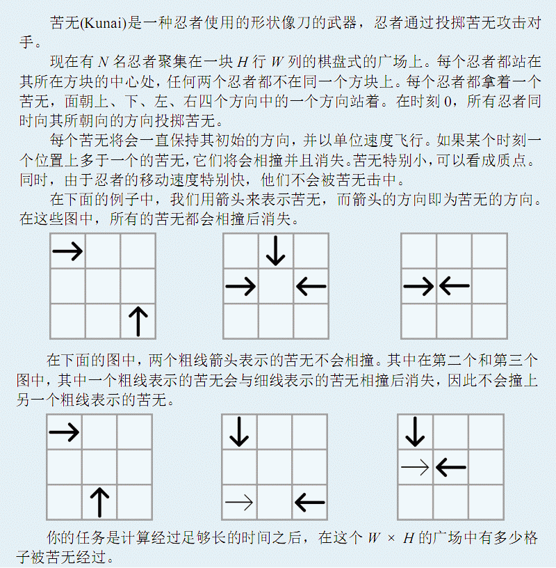

从标准输入读入数据。
第一行包含两个被空格隔开的整数 W, H，表示广场的尺寸为W列H行。
第二行包含一个整数N，表示忍者的数量。
接下来N行中，第 i行有三个以空格分隔的整数 X
i,Yi, D i, 表示第i个忍者处在从左往右的 X
i列、从上往下的第Yi行，任何两个忍者不在同一个位置。第i个忍者面向的方向由Di
Di = 0，表示忍者向右；
Di = 1，表示忍者向上；
Di = 2，表示忍者向左；
Di = 3，表示忍者向下。

从标准输入读入数据。
第一行包含两个被空格隔开的整数 W, H，表示广场的尺寸为W列H行。
第二行包含一个整数N，表示忍者的数量。
接下来N行中，第 i行有三个以空格分隔的整数 X
i,Yi, D i, 表示第i个忍者处在从左往右的 X
i列、从上往下的第Yi行，任何两个忍者不在同一个位置。第i个忍者面向的方向由Di
Di = 0，表示忍者向右；
Di = 1，表示忍者向上；
Di = 2，表示忍者向左；
Di = 3，表示忍者向下。
输出一个整数，表示经过足够长的时间之后，在这个 W H 的广场中被苦无经过被苦无经过的格子数量。
5 4
5
3 3 2
3 2 0
4 2 2
5 4 1
1 1 3
11
1 ≤N ≤ 100,000 忍者数；
1 ≤W ≤ 1,000,000,000 列数；
1 ≤H ≤ 1,000,000,000 行数；
1 ≤Xi ≤ W，1 ≤ Yi ≤ H 坐标范围。